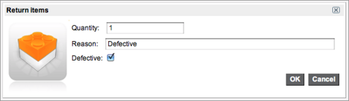
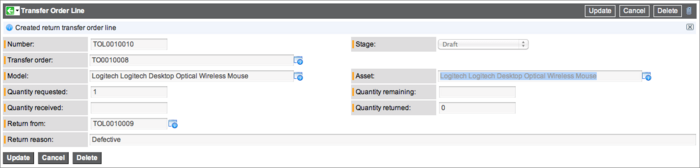

Transfer Orders
| |
Note: This article applies to Fuji and earlier releases. For more current information, see Transfer Orders at http://docs.servicenow.com
The ServiceNow Wiki is no longer being updated. Visit http://docs.servicenow.com for the latest product documentation. |
Contents
1 Overview
The Asset Management application enables asset managers to create transfer orders for moving assets between company stockrooms.
Transfer order lines allow the transfer of multiple assets on one transfer order. Actions such as shipment preparation can take place at the order level or the line level. Pre-allocated assets can be included in a transfer order line, but can only be transferred in their full quantity. A business rule prevents asset managers from transferring the same asset at the same time.
Consumable assets and non-consumable assets can be transferred as follows:
- If an asset is consumable, it can be transferred and the quantity can be greater than one. Consumable parts are tracked by the system qualitatively.
- If an asset is non-consumable, it must be transferred as a single entity with a quantity of one. Non-consumable parts correspond to assets defined in the system.
2 Transferring Assets Using Transfer Orders
The steps below explain how to create a transfer order and move it from Draft status to Received. For a more detailed look at the process, see Moving an Asset Through the Transfer Process.
- Create a transfer order by navigating to the appropriate location for your version:
- Eureka release or later: Inventory Management > Transfer Orders > Create Transfer Order
- Dublin release or earlier: Asset Management > Inventory > Create Transfer Order
- Enter a From Stockroom and To Stockroom.
- Note: If you select the same stockroom for both fields, the transfer order automatically moves from Draft to Received as soon as a transfer order line is added (starting with the Eureka release).
- Enter a Delivery by date.
- Click Submit.
- Select the transfer order.
- Next to Transfer Order Lines, click New.
- Select a Model.
- If the model is a consumable, specify a Quantity.
- Click Submit.
- If necessary, repeat steps 6-8 to add more transfer order lines.
- When finished adding assets to transfer, click Ready for fulfillment on the transfer order.
- Click Prepare for shipment. (Alternatively, prepare assets for shipment by selecting individual transfer order lines and clicking Prepare for shipment.)
- Click Ship. (Alternatively, ship assets by selecting individual transfer order lines and clicking Ship.)
- Select each individual transfer order line number and click Receive. (Assets can only be received individually on the transfer order line level, not at the transfer order level.)
- All transfer order lines and the transfer order are marked Received.
3 Creating a Transfer Order
To create a transfer order, navigate to the appropriate location for your version and fill in the fields, as appropriate (see table).
- Eureka release or later: Inventory Management > Transfer Orders
- Dublin release or earlier: Asset Management > Inventory > Create Transfer Order
| Field | Description |
|---|---|
| Number | [Read-only] Unique number for the transfer order generated automatically by the system. |
| From stockroom | [Required] Stockroom from which the items will be shipped. |
| From location | [Read-only] Location from which the items will be shipped. Calculated automatically from the From stockroom field. |
| Requested date | [Read-only] Date on which the transfer order was requested. |
| Drop Off | [Read-only] Check box that indicates whether the items are included in a drop off list. Used in the work management feature only. |
| Stage | [Read-only] Current stage of the transfer order, such as Draft or Requested. Controls what actions can be performed against the transfer order. |
| To stockroom | [Required] Stockroom to which the items will be shipped. |
| To location | [Read-only] Location to which the items will be shipped. Calculated automatically from the To stockroom field. |
| Delivery by date | Date by which items are expected to be received. |
4 Creating Transfer Order Lines
Transfer order lines specify the exact items that comprise a transfer order. A transfer order can contain one or more transfer order lines. Under a single transfer order, all transfer order lines will have the same From location and To location. Each line contains an asset to transfer and the quantity to transfer. The item to transfer is identified by asset name and model name. A transfer order line can involve one quantity of a non-consumable asset or multiple quantities of a consumable asset. A bundled model can be transferred.
After creating a transfer order, click New in the Transfer Order Lines related list and fill in the fields as appropriate (see table).
| Field | Description |
|---|---|
| Number | [Read-only] Internal unique number identifying the transfer order line. |
| Transfer Order | [Read-only] The transfer order to which the transfer order line belongs. |
| Model | [Required] Model of the items requested by the transfer order line. For example, a printer. If the Asset field is filled out first, the Model field is automatically filled in with the model corresponding to the asset. |
| Quantity requested | [Read-only] Number of items requested by the transfer order line. For example, 3 computers are requested to be transferred. |
| Quantity received | [Read-only] Number of items already received. For example, 3 keyboards are transferred, 2 are received. |
| Stage | [Read-only] Current stage of the transfer order. Transfer order lines can only be created when a transfer order is in Draft stage. |
| Request line | Requested item to associate with the transfer order line. |
| Asset | [Required] Asset requested by the transfer order line. For example, a specific printer. The asset can filter on stockrooms. |
| Quantity remaining | [Read-only] Number of items yet to be received. For example, 3 keyboards had been requested, 2 are received, 1 is remaining. |
| Quantity returned | [Read-only] Number of items that already needed to be returned. |
5 Moving an Asset Through the Transfer Process
The transfer order itself and each individual transfer order line have a separate stage. The overall stage of the transfer order is calculated cumulatively based on the stages of the individual transfer order lines. For example, after all transfer order lines are changed to Received, the transfer order is marked Received. The transfer order line stages are visible in the Transfer Order Lines related list. Click the plus icon to expand the stage information.
After creating transfer order lines, the transfer order and all of the transfer order lines are in Draft stage. Transfer orders and transfer order lines always start in Draft. While a transfer order or a transfer order line is in Draft stage, it can be deleted.
| |
Note: When an asset is part of a transfer order set to Draft, the asset record updates to show the asset as reserved. No one else can request or transfer the asset while it is reserved. |
After all information has been added to the transfer order and the transfer order lines, click Ready for Fulfillment on the transfer order. This moves the transfer order and all transfer order lines to the Requested stage. At this point in the process, the transfer order can continue to move forward as a unit or the transfer order lines can be moved forward separately. To move the transfer order, ready all assets for shipment and click Prepare for shipment on the transfer order. The transfer order and all transfer order lines move to the Shipment Preparation stage. You can also click Prepare for shipment on a transfer order line to move only that transfer order line to the Shipment Preparation stage. The transfer order stage is set to Shipment Preparation as soon as the first transfer order line is set to Shipment preparation.
While an asset is in the Shipment Preparation (or earlier) stage, the transfer order line can be cancelled by opening the transfer order line record and clicking Cancel. The stage changes to Cancelled (Closed Complete).
When all transfer order lines reach the Shipment preparation stage, the Ship button is available on the transfer order. Click Ship on the transfer order to move all transfer order lines to the In Transit stage. In the case that assets ship at different times, transfer order lines can move individually. For example, assume a transfer order is comprised of three assets: a laptop, a printer, and a keyboard. All three assets have been prepared for shipment and the laptop is ready to ship. Click the transfer order line Number next to the laptop. Now, on the transfer order line record for the laptop, click Ship.
The laptop moves to the In Transit stage, but the printer and keyboard remain in the Shipment Preparation stage. Because at least one of the transfer order lines is now in transit, the overall transfer order is moved to the Partially Shipped stage. Once all transfer order lines are shipped, the transfer order moves to the Fully Shipped stage.
After all transfer order lines are shipped, the next step is to receive the assets. Assets are always received at the transfer order line level. To receive an asset, click the transfer order line Number next to the asset. On the asset record, click Receive.
Once all transfer order lines are received, the transfer order moves to the Received stage.
| |
Note: It may be necessary to return items, such as when they are defective. To return items, receive the items, then follow the return process. |
5.1 Summary of Transfer Order Stages
As assets move through the transfer process, the stage of a transfer order is always based on the stages of the individual transfer order lines.
| Transfer Order Stage | Action |
|---|---|
| Draft | After all information has been added to the form, click Ready for Fulfillment. |
| Requested | If all assets in the transfer order are ready, click Prepare for shipment. The stage of the transfer order and all transfer order lines is automatically changed to Shipment Preparation. (Transfer order lines can also be set to Shipment Preparation individually.) |
| Shipment Preparation | All transfer order lines have to reach shipment preparation before the Ship button is available on the transfer order. |
| Partially Shipped | After at least one transfer order line is changed to Shipped, the transfer order is marked Partially Shipped. |
| Fully Shipped | After all transfer order lines are changed to Shipped, the transfer order is marked Fully Shipped. |
| Received | After all transfer order lines are changed to Received, the transfer order is marked Received. |
| Delivered | Only used with Work Management (starting with the Calgary release). After an item is delivered to a work agent, the transfer order is marked Delivered. |
6 Transfer Order Line Asset Tracking
When an asset is included in a transfer order line, the following takes place:
- a substate field on the asset form changes to reflect the transfer order line states
- the Active TO option on the asset form is automatically selected to show that the asset is part of a transfer order and cannot be added to multiple transfer orders
- the asset is removed from the pool of available assets and changed to a state of In Stock Pending Transfer
As transfer order line actions are triggered, the stock information and states of any affected assets are updated. Consumables and non-consumables are tracked differently.
Non-consumables:
| Transfer Order Line Stage | Affect on Asset Substate |
|---|---|
| Draft | Asset moves to In Stock > Pending Transfer (from the current stockroom). If the asset is a consumable, the quantity can be edited. |
| Requested | Asset stays in In Stock > Pending Transfer. |
| Shipment Preparation | Asset stays in In Stock > Pending transfer. |
| In Transit | Asset moves to In Transit > Reserved. |
| Received | Asset moves to In Stock > Available (in the destination stockroom). |
Consumables:
When a consumable is added to a transfer order line, the stock for the consumable is split into two records and the transfer order links to the newly created stock line. For example:
- Stockroom A has ten keyboards in stock.
- A transfer order line named TOL1 transfers three keyboards from stockroom A to stockroom B.
- The stock of ten keyboards in A is split into two records: seven shown as In stock > Available and three shown as In Stock > Pending Transfer.
- Another transfer order is created with a transfer order line named TOL2 that transfers two keyboards from stockroom A to stockroom B.
- The seven remaining keyboards are split into another two lines: five In stock > Available and two In stock > Pending Transfer.
- NOTE: The three In Stock > Pending Transfer and the two In Stock > Pending Transfer are not merged together because they are not part of the same transfer order line and not necessarily from the same person.
- As TOL2 for two keyboards moves from Draft to Requested to Shipment Preparation, TOL1 for the three keyboards remains In Stock > Pending Transfer.
- When TOL1 for the three keyboards moves to the In Transit stage, the three keyboards are changed to the In Transit > Reserved stage. The same happens for TOL2 with two keyboards.
- When TOL1 is Received, the three keyboards move to In stock > Available in stockroom B.
- When TOL2 is received in stockroom B, the two keyboards move to In stock > Available and are merged with the three keyboards that are also In Stock > Available in B.
- At the end, stockroom B shows five keyboards are In Stock > Available.
7 Deleting a Transfer Order or Transfer Order Line
Users with the inventory_user role can delete transfer orders and transfer order lines. The transfer order or transfer order line must be in the Draft stage.
To delete a transfer order:
- Navigate to the appropriate location for your version:
- Eureka release or later: Inventory Management > Transfer Orders > Transfer Orders
- Dublin release or earlier: Asset Management > Inventory > Transfer Orders
- Select the check box beside a transfer order.
- From the Actions on selected rows menu at the bottom of the list, click Delete.
To delete a transfer order line:
- Open a transfer order.
- Select the check box beside a transfer order line.
- From the Actions on selected rows menu at the bottom of the list, click Delete.
Alternatively, you can cancel a transfer order or a transfer order line while it is in Requested or Shipment Preparation stage.
8 Returning Items Received in a Transfer Order
If a transfer order is received, but there is a problem with all or some of the items, do a transfer order return. Items must be received before they can be returned. Check the status of any transfer order that is in the return process by navigating to the appropriate location for your version:
- Eureka release or later: Inventory Management > Transfer Orders > Transfer Order Returns
- Dublin release or earlier: Asset Management > Inventory > Transfer Order Returns
To return an item:
- Navigate to the appropriate location for your version:
- Eureka release or later: Inventory Management > Transfer Orders > Transfer Orders
- Dublin release or earlier: Asset Management > Inventory > Transfer Orders
- Select a transfer order that is in the Received stage.
- Click the transfer order line Number of the item to return.
- Click Return.
- Enter a Quantity to return.
- Enter a reason for the return.
- Select the Defective check box to return items that are broken.
- Defective items are returned to the stockroom from which they were delivered, but are not added to available stock. Instead, they are tracked in the separate category named "Defective" so they cannot be requested or transferred again.
- 
- Click OK.
- Click Update.
- A new transfer order line is automatically created.
- 
- A new corresponding parent transfer order is also automatically created with the new transfer order line on it.
- If you are returning a consumable, navigate to the transfer order line record and click the model name to open the model record.
- The model record shows which stockrooms contain the model. The one defective model is listed.

- Note that the defective model is still at the stockroom to which it was delivered. The defective model needs to be transferred back to the stockroom where it originated.
- Move the new transfer order through the regular transfer order process. Items are automatically returned to the stockroom from which they were delivered. A transfer order line item that has been returned cannot be delivered at a later time.

{kind=link}
{kind=link}
{kind=link}
{kind=link}
{kind=link}
{kind=link}
{kind=link}
{kind=link}
{kind=link}
{kind=link}